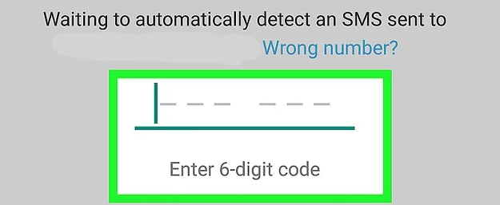
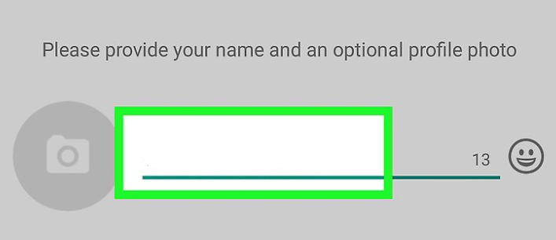
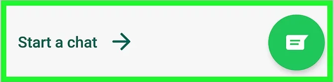

Instagram is an American photo and video-sharing social networking service owned by Facebook, Inc. It was created by Kevin Systrom and Mike Krieger, and launched in October 2010 on iOS. A version for Android devices was released in April 2012, followed by a feature-limited website interface in November 2012, a Fire OS app on June 15, 2014 and an app for Windows 10 tablets and computers in October 2016.
he app allows users to upload photos and videos, which can be edited with filters and organized with tags and location information. Posts can be shared publicly or with pre-approved followers. Users can browse other users' content by tags and locations, and view trending content. Users can like photos and follow other users to add their content to a feed.
Instagram was originally distinguished by only allowing content to be framed in a square (1:1) aspect ratio with 640 pixels to match the display width of the iPhone at the time. These restrictions were eased in 2015, with an increase to 1080 pixels. The service also added messaging features, the ability to include multiple images or videos in a single post, as well as "Stories"—similar to its main competitor Snapchat—which allows users to post photos and videos to a sequential feed, with each post accessible by others for 24 hours each. As of January 2019, the Stories feature is used by 500 million users daily.
Registering/Creating an account with the app
(1)The facebook application is available on both android and apple
systems, start by searching the app in each systems respective app
store.
(2)Open the app and choose "Create an account".

(3)Enter your first and last Name.

(4)Enter your Date of Birth.

(5)Enter your gender.
Click here to watch a short video to explain more
How To Use
Open what’s app on your mobile device and you will see
the main chat page.
This is where you keep track of all messages, calls and
status changes. Along the top row you have the search tab
so you can look for recent or not so recent messages.
Beside the search tab is the settings with three dots. This
is used to open a new group chat, all your favourite or
(starred) messages and out to change your account
settings along with themes, wallpaper and how you receive
notifications.
On the bottom right corner is the message tab where you
select the contact you wish to write to and begin
messaging, it is that easy.
Features found in the app
Feature
Mobile version
Cumputer version
messaging
Add Friends
News Feed
Sharing Content
Live Video
Cautions, warnings, potential for misuse
When using any social media app in general, there will always be an issue with safety. Using them with
caution can minimize the risk but you will never truly be safe when using them as information gets leaked
all the time. The best practice is to only put up and share information that you feel comfortable with
everyone knowing.
Some basic things you should know:
Don’t share your password with anyone
Even if you keep your account limited or private, it can still reach a wider audience
Think about what you’re posting. Can someone find you through the picture?
Instagram isn’t reality as people only post the best parts of their life
With Instagram in general, there are many ways that you can stay protected. One of the easiest ways is to
put your account on private. This will restrict access to your account, meaning no one can view your posts
unless they follow you. People can request to follow you but is it your decision whether you want them to be
able to view your account. You also have the option to choose who can comment on your posts. Your
Instagram Stories are also private.
However, if your account is set on private, your profile is still public so they can see your profile photo, bio
and username. This shouldn’t be an issue as long as you don’t have any information you’re not comfortable
sharing with everyone.
When posting pictures on Instagram, you should keep in mind the location setting and the tags you use.
These could easily show your location to people. Tags can also be used to see your interests and your
location so use them with caution..
Using the app for teaching and learning
Teaching and learning can be improved by using social media in education nowadays. Social media and technology has become a huge part of our daily lives with the majority of adults and teenagers with at least one or two different social media tools or apps which can be accessed from many devices. Since we all still use these apps, there are definitely ways to implement them into education. Some ways benefits and approaches to using social media in education are:
Communication
This one of the biggest advantages to social media, it gives great access to communicate to anyone around the world. Students can connect with their fellow students and teachers easily and from a wide range of devices from mobile phones to PC’s.
Collaboration
Students and teachers can collaborate easily through tools and apps such as Google Drive and Google Docs, making it easy to access files and documents that the whole class needs.
Finding information and inspiration
Students can use social media to find information and be up to date to current events through apps such as Twitter. They can find inspiration for projects through sites and apps like Tumblr and Pinterest.
Parents Involvement
Social Media in Education also helps parents to be connected and involved in the students learning. If the school has a Twitter or Facebook page, parents and students can follow to be updated on the latest news, projects and achievements.
Improved Literacy, Communication and Reading Skills
Students are known to get bored with writing and reading with books and paper. Social media gives them access to information online which can be more catchy and interesting to read. It gives students a different medium to learn which can help with making learning easier.
Instagram is a social app that can be used for teaching and learning in Education. There are over 1 Billion users on instagram with 72% being teenagers. 35% of the teenagers in the US said that Instagram is their preferred social media platform. This just shows that instagram has a huge potential to be used in Education.
Finding Ideas
A great way teachers can find new and interesting ideas to use in class would be to search around on Instagram, there are many teacher and educational accounts around that can be followed and provide great ideas. Following the hashtag #teachersofinstagram will help a teacher find those accounts easily.
Capture Memories
A teacher can post pictures of a lot of the memories made in class. This can be from regular days in class, to going on a trip or completing cool activities. This can remind the students of these memories and also allow their parents to see all the interesting things their children are doing at school.
Show Students Work
Instagram is a perfect place to showcase students' works and achievements, since it works on a basis of posting pictures with a caption underneath. The class account can act as a place to post award winning projects and achievements that the students have made.
Help Students
Teachers can use Instagram to help students by posting homework and reminders for projects. They can also post useful tutorials or links to useful sites that the students can use to learn. The comments section can also be used to engage the whole classroom and students can learn of one another that way too. The Direct Messages can also be useful when a student needs to ask a question relating to a post privately if they don't want to comment.
.png)
.png)

.png)